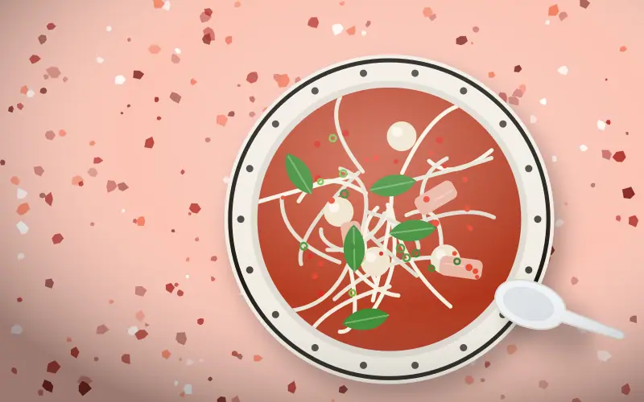
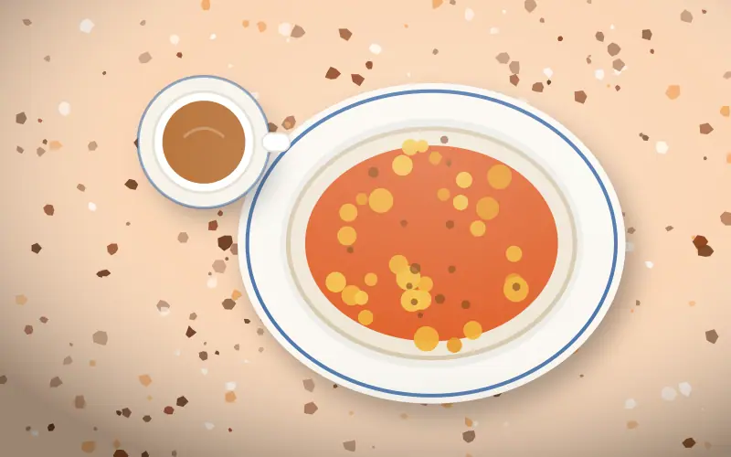

Cheap eats in Islands 離島區
10 places, from $15. Tap one for prices, hours and the nearest MTR.
 Hometown Teahouse一休 · Cheung Chau~$38
Hometown Teahouse一休 · Cheung Chau~$38 Kam Wing Tai Fish Ball甘永泰魚蛋 · Cheung Chau~$25
Kam Wing Tai Fish Ball甘永泰魚蛋 · Cheung Chau~$25 Kwok Kam Kee Cake Shop郭錦記餅店 · Cheung Chau~$16
Kwok Kam Kee Cake Shop郭錦記餅店 · Cheung Chau~$16 Tai O Charcoal Egg Waffle大澳炭燒雞蛋仔 · Tai O~$25
Tai O Charcoal Egg Waffle大澳炭燒雞蛋仔 · Tai O~$25 Auntie Yi Tofu Pudding依姐豆腐花 · Lamma Island~$15
Auntie Yi Tofu Pudding依姐豆腐花 · Lamma Island~$15 Po Lin Monastery Vegetarian寶蓮禪寺素齋 · Ngong Ping~$138
Po Lin Monastery Vegetarian寶蓮禪寺素齋 · Ngong Ping~$138 Mui Wo Cooked Food Market梅窩街市熟食中心 · Mui Wo~$68
Mui Wo Cooked Food Market梅窩街市熟食中心 · Mui Wo~$68
Tam Jai Yunnan Mixian (Tung Chung)譚仔雲南米線（東涌） · Tung Chung$56 Tsui Wah (Tung Chung)翠華（東涌） · Tung Chung$78
Tsui Wah (Tung Chung)翠華（東涌） · Tung Chung$78 
Fairwood (Tung Chung)大快活（東涌） · Tung Chung$52